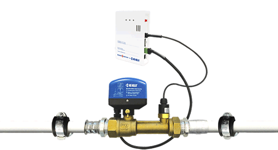

<!doctype html>
<html>
<head>
<meta charset="UTF-8">
<meta http-equiv="X-UA-Compatible" content="IE=edge">
<meta name="viewport" content="width=device-width, initial-scale=1">
<title>Aquasenso</title>
<!-- <link href="css/bootstrap.min.css" rel="stylesheet"> -->
<link href="css/bootstrap.min.css" rel="stylesheet">
<!--<link rel="stylesheet" href="css/owl.carousel.css">
<link rel="stylesheet" href="css/owl.theme.default.min.css">
-->
<link rel="stylesheet" href="owl-carousel/owl.carousel.css">
<link rel="stylesheet" href="owl-carousel/owl.theme.css">
<link rel="stylesheet" href="css/font-awesome.min.css">
<link rel="stylesheet" href="css/style.css">
</head>
<body>
<header>
<div class="container navbar-fixed-top">
	<div class="row">
  <nav class="navbar navbar-default">
          <!-- Brand and toggle get grouped for better mobile display -->
      <div class="navbar-header">
        <button type="button" class="navbar-toggle collapsed" data-toggle="collapse" data-target="#defaultNavbar1"><span class="sr-only">Toggle navigation</span><span class="icon-bar"></span><span class="icon-bar"></span><span class="icon-bar"></span></button>
        <div class="navbar-brand" >
            <div class="circle-brand">
                <a href="index.html"> </a>
                <a href="http://kekelit.hu" target="_blank"></a>
            </div>
         </div>
      </div>
      <!-- Collect the nav links, forms, and other content for toggling -->
      <div class="collapse navbar-collapse" id="defaultNavbar1">
        <ul class="nav navbar-nav navbar-right">
          <li><a href="#link1">3 percenként <span>vízkár</span><span class="sr-only">(current)</span></a></li>
          <li><a href="#link2">Kártípusok <span>Előzze meg!</span></a></li>
          <li><a href="#link3">Proaktív <span>védelem</span> </a></li>
          <li><a href="#link4">Telepítés <span>könnyedén</span></a></li>
          <li><a href="#link5">Aquasenso <span>rendszer</span></a></li>
          <li><a href="#link6">Lépjen velünk <span>kapcsolatba</span></a></li>
        </ul>
      </div>
      <!-- /.navbar-collapse -->
    <!-- /.container-fluid -->
  </nav><!--nav-->
</div>
</div>
</header><!--header-->
<main>
<div class="container">
	<section class="row section-1"  id="link1">
    	<div class="col-xs-12 col-lg-12">
        	<h1 class="feeling-h1"><span>MAGYARORSZÁG:</span> 3 PERCENKÉNT 1 VÍZKÁR!</h1>
            <div class="hidden-md hidden-lg feeling-pattern">
                <div class="hidden-md hidden-lg feeling-mobile"></div>
             </div>   
            <h2><span>Előzze meg!</span> <i class="header-brand"></i> intelligens vízvezeték-felügyeleti rendszer.</h2>
        	 </div>
    </section><!--section 1 -->
	<section class="row section-2"  id="link2">
    	<div class="col-xs-12 col-md-10 col-lg-10 center-block">
        	<h1>A lakáskárok 68%-át csőtörés okozza. <span>Előzze meg!</span></h1>
          <div class="owl-demo" >
                            <div class="item">
                            	<div class="col-xs-12  col-md-10 col-md-offset-1 col-lg-10 col-lg-offset-1  carousel-img">
                                     
                                     <p><span>Előzze meg</span> régi családi képei, a dédi kézzel írt szakácskönyve, bélyeggyűjteménye vagy értékes régiségei végleges megsemmisülését!</p>
                                </div> 
                            </div><!--item ends--> 
                            <div class="item">
                            	<div class="col-xs-12 col-md-10 col-md-offset-1 col-lg-10 col-lg-offset-1  carousel-img">
                                     
                                     <p><span>Előzze meg</span> régi családi képei, a dédi kézzel írt szakácskönyve, bélyeggyűjteménye vagy értékes régiségei végleges megsemmisülését!</p>
                                </div> 
                            </div><!--item ends--> 
                            <div class="item">
                            	<div class="col-xs-12 col-md-10 col-md-offset-1 col-lg-10 col-lg-offset-1  carousel-img">
                                     
                                     <p><span>Előzze meg</span> drága bútorai, értékes házimozi rendszere tönkremenetelét!</p>
                                </div> 
                            </div><!--item ends--> 
                            <div class="item">
                            	<div class="col-xs-12 col-md-10 col-md-offset-1 col-lg-10 col-lg-offset-1  carousel-img">
                                     
                                     <p><span>Előzze meg</span> minőségi burkolóanyaga felvésését, a hosszan tartó falszárítást és a kellemetlen biztosítási ügyintézést!</p>
                                </div> 
                            </div><!--item ends--> 
                            <div class="item">
                            	<div class="col-xs-12 col-md-10 col-md-offset-1 col-md-10 col-md-offest-1 col-lg-10 col-lg-offset-1  carousel-img">
                                     
                                     <p><span>Előzze meg</span> minőségi burkolóanyaga felvésését, a hosszan tartó falszárítást és a kellemetlen biztosítási ügyintézést!</p>
                                </div> 
                            </div><!--item ends--> 
                         </div>  
        </div>
    </section><!--section 2 -->
	<section class="row section-3"  id="link3">
    	<div class="col-xs-12 col-lg-10 center-block">
        	<h1><span>Előzze meg!</span> A megoldás: <i class="header-brand"></i>intelligens vízvezeték-felügyeleti rendszer.</h1>
            <p class="double-margin-p">A vízvezeték rendszert alaphelyzetben zárva tartja, így a csőtörés és mosógép mosógép bekötés leszakadása távollétében nem okoz hihetetlen vízkárokat. Amikor hazaér, a mozgásérzékelők a fürdőben, konyhában, WC-ben jelzik az Ön jelenlétét. Ilyenkor a vezérlőegység rádiójel segítségével megnyitja a vízrendszerét. Néhány másodperc múlva a folyóvíz korlátozás nélkül rendelkezésre áll. Otthon tartózkodása alatt a vízérzékelő védi meg lakását a vízkároktól, például egy kádtúlengedés esetén. Amennyiben a mozgásérzékelő 30 percig nem ad jelet a vezérlőnek, a rendszer automatikusan lezárja a vízvezetékét. Gond nélkül utazhat el üdülni, illetve hagyhatja ott üdülőjét. </p>
        	<div class="col-xs-12 col-md-6 col-lg-6">
           			   <ul class="nav text-left">
                            <li><i></i>Vízvezeték-rendszerét automatikusan lezárja, ha:</li>
                            <li><i></i>nem érzékel a lakásában mozgást,</li>
                            <li><i></i>Ön elutazott,</li>
                            <li><i></i>Ön alszik,</li>
                            <li><i></i>hirtelen nyomásesést érzékel,</li>
                            <li><i></i>vizet érzékel a fürdő, a konyha padlóján.</li>
           			   </ul>
        	</div><!--left side-->
        	<div class="col-xs-12 col-md-6 col-lg-6">
           			   <ul class="nav text-left">
                            <li><i></i>Vízvezeték-rendszerét automatikusan megnyitja, ha:</li>
                            <li><i></i>mozgást érzékel a fürdőben, konyhában, WC-ben,</li>
                            <li><i></i>amennyiben mosogatógépe, mosógépe igényel.</li>
           			   </ul>
           			    </div><!--right side-->
        </div>
    </section><!--section 3 -->
	<section class="row section-4"  id="link4">
    	<div class="col-xs-12 col-lg-10 center-block">
        	<h1>Az <i class="header-brand"></i> rendszer vésés, bontás, <br>villanyszerelés nélkül telepíthető.</h1>
            <p class="double-margin-p">Új épületekbe és meglévő rendszerekhez is egyaránt könnyen telepíthető. A pincébe telepített vezérlő és a padlástérbe épített mozgásérzékelő tökéletesen kommunikál egymással. Áramszünetnél, meghibásodásnál manuálisan nyitható-zárható a vízrendszer.</p>
            <div class="owl-demo">
                <div class="item">
                   <div class="col-xs-12 col-md-6 col-lg-6 carousel-img">
           			   
                    </div>
                   <div class="col-xs-12  col-md-6 col-lg-6">
                         <h2>Jeladó típusok</h2>
                         <i class="icon-big icon-01">
                          </i>
                         <h5 class="text-left"> Mozgásérzékelők fürdőbe, konyhába, WC-be</h5>
                     <p  class="text-left">Mozgást érzékelve jelet ad a vezérlőnek, és a csapból már folyik is a víz, ha megnyitjuk. Elemekkel működik, nincs szükség falvésésre, vezetékekre. </p>
                         <i class="icon-01"></i>
                         <i class="icon-02"></i>
                   </div>
                </div><!--item ends--> 
                <div class="item">
                   <div class="col-xs-12 col-md-6 col-lg-6 carousel-img">
           			   
                  </div>
                   <div class="col-xs-12  col-md-6 col-lg-6">
                         <h2>Jeladó típusok</h2>
                         <i class="icon-big icon-02">
                             
                          </i>
                         <i class="icon-big icon-03"> </i>
                         <h5 class="text-left">Vízérzékelők fürdőbe, konyhába</h5>
                         <p  class="text-left">A padlón vizet érzékelve vészjelzést ad a vezérlőnek, és automatikusan elzárja vizet. Téves riasztás esetén (pl: felmosás bő vízzel) egy gombnyomással törölhető a tiltás a vezérlőből, és a víz újra folyik a csapból. Szinte észrevétlenül elrejthető, csatlakoztatása egy áramforráshoz a fürdőben és konyhában nem okozhat gondot.</p>
                     <i class="icon-03"></i>
                  </div>
                </div><!--item ends--> 
                <div class="item">
                   <div class="col-xs-12 col-md-6 col-lg-6 carousel-img">
           			   
                  </div>
                   <div class="col-xs-12  col-md-6 col-lg-6">
                         <h2>Jeladó típusok</h2>
                         <i class="icon-big icon-04"></i>
                         <i class="icon-big icon-05">
                             
                          </i>
                         <h5 class="text-left">Mosogatógép/mosógép készülékjelző</h5>
                         <p  class="text-left">A mosógép, mosogatógép abban az esetben is folytathatja beállított programját, ha elmegyünk otthonról. Amikor berendezésünk vizet kér, a készülékjelző a vezérlőn keresztül megnyitja számára a főcsapot. Szinte észrevétlenül elrejthető a berendezések mögé, és áramforráshoz való csatlakoztatáshoz is a készülékeké használható. </p>
                     <i class="icon-03"></i>
                  </div>
                </div><!--item ends--> 
            </div><!--carusel ends--> 
        </div>
    </section><!--section 4 -->
	<section class="row section-5"  id="link5">
    	<div class="col-xs-12 col-lg-10 center-block">
        	             <div class="col-xs-12  col-md-5 col-lg-5">
             		<h5>Jelfogó vezérlőegység, golyóscsap, nyomásesés-érzékelő</h5>
                    <p>A golyóscsap és állítómotorja a vezérlővel van összekötve, és a jelzők utasítására nyitja/zárja a vízrendszert. A pincébe vagy a lakásunkba érkező fő nyomóvezetékhez kell elhelyezzük. A golyóscsap beépítését feltétlenül bízzuk szakemberre. A vezérlőt áramforráshoz kell csatlakoztassuk.</p>
                    <i class="icon-03"></i>
             </div><!--left-->
             <div class="col-xs-12  col-md-7 col-lg-7">
                      
             </div><!--right-->
        </div>
    </section><!--section 5 -->
	<section class="row section-8"  id="link8">
    	<div class="col-xs-12 col-lg-10 center-block">
        	<h1>Rólunk írták</h1>
             <div class="col-xs-12  col-md-4 col-lg-4">
                <h3>SZÉPLAK<br>Vízkár kizárva</h3>
             </div><!--left-->
             <div class="col-xs-12  col-md-2 col-lg-2">
                 <h3>SZÉPLAK<br>Kirakatnéző</h3>
             </div><!--left-->
             <div class="col-xs-12  col-md-2 col-lg-2">
                 <h3>SZÉP HÁZAK<br>Vízvezeték-felügyelet</h3>
             </div><!--left-->
             <div class="col-xs-12  col-md-4 col-lg-4">
                 <h3>OTTHON<br>Intelligens vízvezeték-felügyeleti rendszer</h3>
             </div><!--right-->
        </div>
    </section><!--section 8 -->
	<section class="row section-9"  id="link9">
    	<div class="col-xs-12 col-lg-10 center-block">
        	<h1>Információk, árak</h1>
             <div class="col-xs-12  col-md-3 col-lg-3">
                <i class="fa fa-file-pdf-o" aria-hidden="true"></i>
                <h6>Bemutató prospektus</h6>
             </div><!--left-->
             <div class="col-xs-12  col-md-3 col-lg-3">
                <i class="fa fa-file-pdf-o" aria-hidden="true"></i>
                <h6>Használati utasítás</h6>
             </div><!--left-->
             <div class="col-xs-12  col-md-3 col-lg-3">
                <i class="fa fa-file-pdf-o" aria-hidden="true"></i>
                <h6>Műszaki leírás</h6>
             </div><!--left-->
             <div class="col-xs-12  col-md-3 col-lg-3">
                <i class="fa fa-file-excel-o" aria-hidden="true"></i>
                <h6>Árkalkulátor</h6>
             </div><!--right-->
        </div>
    </section><!--section 8 -->
	<section class="row section-7"  id="link6">
    	<div class="col-xs-12 col-lg-10 center-block">
        	<h1>Értékesítés, kapcsolat</h1>
             <div class="col-xs-12 col-sm-3  col-md-3 col-lg-3 text-left">
             	<address>
                        <h6>AQUAMART BUDA</h6>
                        <ul class="nav">
                            <li><i class="fa fa-map-marker" aria-hidden="true"></i>1036 Budapest, Perc utca 8. <br>
                            <li><i class="fa fa-phone" aria-hidden="true"></i>+36 1 870 0448<br>
                            <li><i class="fa fa-envelope" aria-hidden="true"></i><a href="mailto:aquabuda@mart.hu">aquabuda@mart.hu</a>
                        </ul>   
                        <h6>AQUAMART BUDAÖRS</h6>
                        <ul class="nav">
                            <li><i class="fa fa-map-marker" aria-hidden="true"></i>2040 Budaörs, Építők útja 2-4.<br>
                            <li><i class="fa fa-phone" aria-hidden="true"></i>+36 23 414 199<br>
                            <li><i class="fa fa-envelope" aria-hidden="true"></i><a href="mailto:aquabudaors@mart.hu">aquabudaors@mart.hu</a><br>
                        </ul>   
              	</address>
             </div><!--four-->
             <div class="col-xs-12 col-sm-3  col-md-3 col-lg-3  text-left">
             	<address>
                    <h6>AQUAMART NYÍREGYHÁZA</h6>
                    <ul class="nav">
                        <li><i class="fa fa-map-marker" aria-hidden="true"></i>4400 Nyíregyháza, Debreceni út 138. <br>
                        <li><i class="fa fa-phone" aria-hidden="true"></i>+36 42 596 777, +36 42 596 778<br>
                        <li><i class="fa fa-envelope" aria-hidden="true"></i><a href="mailto:aquanyiregyhaza@mart.hu">aquanyiregyhaza@mart.hu</a>
                    </ul>   
                    <h6>AQUAMART SZÉKESFEHÉRVÁR</h6>
                    <ul class="nav">
                       <li> <i class="fa fa-map-marker" aria-hidden="true"></i>8000 Székesfehérvár, <br> Balatoni út 44-46.<br>
                        <li><i class="fa fa-phone" aria-hidden="true"></i>+36 22 880 558<br>
                        <li><i class="fa fa-envelope" aria-hidden="true"></i><a href="mailto:aquaszekesfehervar@mart.hu">aquaszekesfehervar@mart.hu</a><br>
                    </ul>   
              	</address>
             </div><!--four-->
             <div class="col-xs-12 col-sm-3  col-md-3 col-lg-3  text-left">
             	<address>
                    <h6>AQUAMART PEST</h6>
                    <ul class="nav">
                        <li><i class="fa fa-map-marker" aria-hidden="true"></i>1138 Budapest, <br>Madarász Viktor u. 47-49.</li> 
                        <li><i class="fa fa-phone" aria-hidden="true"></i>+36 882 7303, +36 1 882 7304, <br> +36 1 882 7306</li> 
                        <li><i class="fa fa-envelope" aria-hidden="true"></i><a href="mailto:aquabudapest@mart.hu">aquabudapest@mart.hu</a></li> 
                    </ul>   
                    <h6>AQUAMART DUNAKESZI</h6>
                    <ul class="nav">
                        <li><i class="fa fa-map-marker" aria-hidden="true"></i>2120 Dunakeszi, Székesdűlő-Házgyár 8028 hrsz.</li>
                        <li><i class="fa fa-phone" aria-hidden="true"></i>+36 27 542 236, +36 27 542 246, <br> +36 27 546 900</li>
                        <li><i class="fa fa-envelope" aria-hidden="true"></i><a href="mailto:aquadunakeszi@mart.hu">aquadunakeszi@mart.hu</a></li>
                    </ul>   
              	</address>
             </div><!--four-->
             <div class="col-xs-12 col-sm-3  col-md-3 col-lg-3  text-left">
             	<address>
                    <h6>AQUAMART NAGYKANIZSA</h6>
                    <ul class="nav">
                        <li><i class="fa fa-map-marker" aria-hidden="true"></i>8800 Nagykanizsa, Csengery út 113/a. </li>
                        <li><i class="fa fa-phone" aria-hidden="true"></i>+36 93 510 223, +36 93 510 224</li>
                        <li><i class="fa fa-envelope" aria-hidden="true"></i><a href="mailto:aquanagykanizsa@mart.hu">aquanagykanizsa@mart.hu</a></li>
                    </ul>   
                    <h6>AQUAMART GYŐR</h6>
                    <ul class="nav">
                        <li><i class="fa fa-map-marker" aria-hidden="true"></i>9025 Győr, Csipkegyári út 11.</li>
                        <li><i class="fa fa-phone" aria-hidden="true"></i>+36 99 887-578</li>
                        <li><i class="fa fa-envelope" aria-hidden="true"></i><a href="mailto:aquagyor@mart.hu">aquagyor@mart.hu</a></li>
                    </ul>   
              	</address>
             </div><!--four-->
        <div class="col-xs-12 col-lg-12 center-block text-left">
             <h2>További innovatív találmányok a KE KELIT-től: <br>
						<i class="fa fa-external-link" aria-hidden="true"></i> <a href="http://www.kekelit.hu" target="_blank">www.kekelit.hu</a></h2>
        </div>               
        </div>
    </section><!--section 7 -->
	<footer class="row section-6 text-left">
    <div class="col-xs-12">
    	<div class="col-xs-12  col-md-4 col-md-offset-1 col-lg-3 col-lg-offset-1">
             
        </div>
    	<div class="col-xs-12  col-md-3 col-lg-3 col-lg-offset-1 ">
        	<p>Kunststoffwerk GesmbH.<br>
                    H-2120 Dunakeszi,<br>
                    Székesdűlő-Házgyár 0126/2.hrsz.</p>
        </div>
    	<div class="col-xs-12  col-md-4 col-lg-4 text-left">
        	<p>Telefon: +36 27 542 399<br>
                    Email: <a href="mailto:hungary@kekelit.com">hungary@kekelit.com</a><br>
                    Web: <a href="http://www.aquasenso.hu">www.aquasenso.hu</a>, <a href="http://www.kekelit.hu" target="_blank">www.kekelit.hu</a></p>
        </div>
    	</div>	
    </footer><!--section 6 -->
</div><!--container-->
</main><!--main-->
<!-- jQuery (necessary for Bootstrap's JavaScript plugins) --> 
<script src="js/jquery-1.11.2.min.js"></script>
<script src="js/respond.js"></script>
<!-- <script src="js/bootstrap.min.js"></script> -->
<script src="js/bootstrap-3.3.4.js" type="text/javascript"></script>
<script type="text/javascript" src="js/TweenMax.min.js"></script>
<script type="text/javascript" src="js/jquery.scrollmagic.min.js"></script>
<script src="js/owl.carousel.js"></script>
<script src="js/script.js"></script>
<script src="http://localhost:35729/livereload.js"></script>
</body>
</html>
